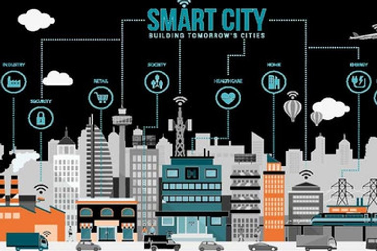

Trong quy hoạch đô thị thế giới, việc tích hợp Hệ thống thông tin địa lý (GIS) ngày càng trở nên quan trọng. Công nghệ GIS cho phép các nhà quy hoạch phân tích và trực quan hóa dữ liệu, cung cấp những hiểu biết sâu sắc có giá trị cho việc ra quyết định.
Khi các thành phố trên khắp thế giới đang nỗ lực trở nên thông minh và bền vững hơn, GIS đã nổi lên như một công cụ quan trọng để thúc đẩy quá trình quy hoạch đô thị.
Một trong những lợi thế chính của GIS trong quy hoạch thành phố thông minh là khả năng thu thập và quản lý lượng lớn dữ liệu không gian địa lý.

Bằng cách kết hợp dữ liệu từ nhiều nguồn khác nhau, chẳng hạn như hình ảnh vệ tinh, cảm biến và phương tiện truyền thông xã hội, các nhà quy hoạch có thể hiểu biết toàn diện về tình trạng hiện tại của thành phố.
Dữ liệu này có thể gồm thông tin về mạng lưới giao thông, mô hình sử dụng đất, nhân khẩu học và các yếu tố môi trường.
Với lượng thông tin dồi dào, các nhà hoạch định có thể đưa ra những quyết định sáng suốt về cách phân bổ nguồn lực tốt nhất và xây dựng các chiến lược phát triển trong tương lai.
Hơn nữa, GIS cho phép các nhà quy hoạch tiến hành phân tích không gian, bao gồm việc kiểm tra mối quan hệ giữa các yếu tố khác nhau của môi trường đô thị.
Kết nối dữ liệu về cơ sở hạ tầng giao thông với thông tin nhân khẩu học, có thể xác định các khu vực chưa được phục vụ bởi giao thông công cộng và ưu tiên cải thiện.
Tương tự, phân tích các mô hình sử dụng đất kết hợp với các yếu tố môi trường, có thể xác định các khu vực có nguy cơ lũ lụt hoặc các thảm họa thiên nhiên khác và thực hiện các biện pháp giảm thiểu thích hợp.
Phân tích không gian cho phép các nhà quy hoạch xác định các mô hình và xu hướng chưa rõ ràng khi sử dụng phương pháp phân tích dữ liệu truyền thống, nhờ đó đưa ra các chiến lược quy hoạch có mục tiêu và hiệu quả hơn.
Một khía cạnh quan trọng khác của GIS trong quy hoạch thành phố thông minh là tạo điều kiện thuận lợi khuyến khích công chúng tham gia.
Bằng cách tạo bản đồ tương tác và trực quan hóa, có thể thu hút người dân tham gia vào quá trình lập kế hoạch và thu thập phản hồi có giá trị.
Ví dụ người dân có thể sử dụng các công cụ GIS để đánh dấu các khu vực cần cải thiện hoặc đề xuất các tiện nghi mới.
Cách tiếp cận này không chỉ đảm bảo quá trình lập kế hoạch mang tính toàn diện và minh bạch, mà còn cho phép các nhà hoạch định khai thác kiến thức và sức mạnh của cộng đồng.
GIS cũng đóng vai trò quan trọng trong việc giám sát và đánh giá hiệu quả của các can thiệp quy hoạch. Bằng cách liên tục thu thập và cập nhật dữ liệu, các nhà quy hoạch có thể theo dõi những thay đổi trong môi trường đô thị và đánh giá tác động từ các quyết định của họ.
Quá trình giám sát và đánh giá này cho phép các nhà quy hoạch học hỏi từ kinh nghiệm trong quá khứ và điều chỉnh chiến lược của mình, đảm bảo rằng các thành phố tiếp tục phát triển, thích ứng với những nhu cầu và thách thức đang thay đổi.
Khi khái niệm về thành phố thông minh tiếp tục được chú ý, việc tích hợp công nghệ GIS và Internet Vạn vật (IoT) hứa hẹn sẽ hỗ trợ các quy trình quy hoạch đô thị.
Việc kết nối cơ sở hạ tầng với các hệ thống kỹ thuật số, các nhà quy hoạch có thể tạo ra một môi trường dữ liệu theo thời gian thực, cho phép phát triển đô thị hiệu quả và bền vững hơn.
Tích hợp cảm biến vào đèn đường, có thể thu thập dữ liệu về mô hình giao thông và điều chỉnh thời gian tín hiệu cho phù hợp, giảm tắc nghẽn và cải thiện lưu lượng giao thông.
Tương tự, sử dụng các thiết bị IoT để theo dõi mức tiêu thụ năng lượng trong các tòa nhà, có thể xác định các cơ hội cải thiện hiệu quả sử dụng năng lượng.
GIS đã trở thành một công cụ không thể thiếu trong quy hoạch thành phố thông minh, trở thành tài sản vô giá cho các nhà quy hoạch đô thị.
Khi các thành phố trên khắp thế giới tiếp tục phát triển và đối mặt với những thách thức mới, việc tích hợp công nghệ GIS và IoT sẽ đóng một vai trò quan trọng trong việc tạo ra môi trường đô thị bền vững, đáng sống và linh hoạt hơn.